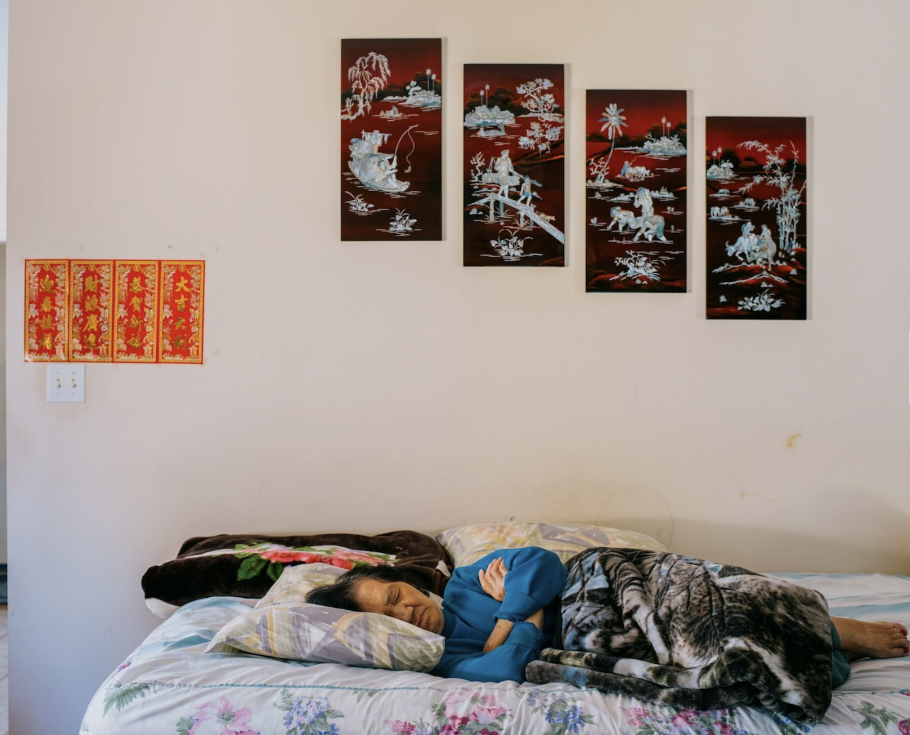
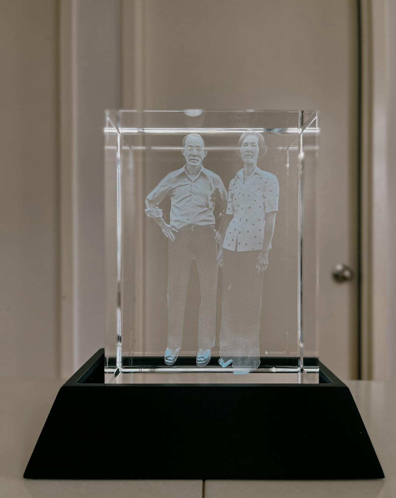
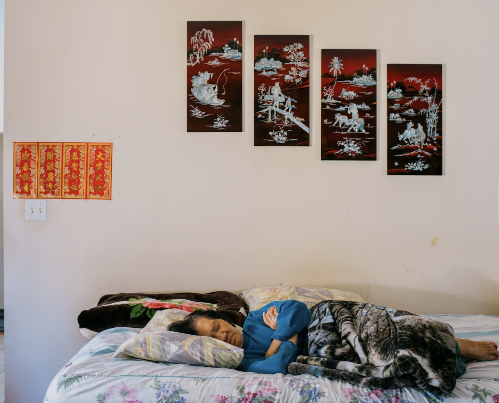
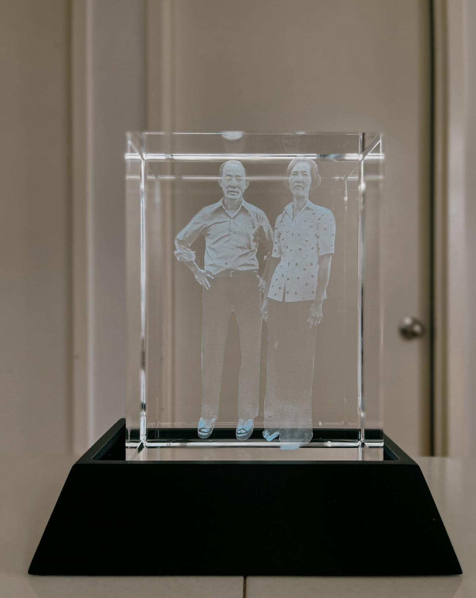

Kha challenges conventional notions of belonging and alienation within Asian American identity through portraiture, employing analog photography and collage techniques.
Drawing inspiration initially from Nan Goldin and later from Claude Cahun, Kha integrates cutouts of himself into his work, producing a different type of self-representation
that intensifies his sense of displacement and the feeling of not belonging, often juxtaposed against scenes of quintessential Americana.
Rooted in his family's history of immigration and displacement, which was passed down in fragmented stories and gestures by his grandmother, Kha's art emerges as an
exploration of untold narratives. Through his photography, he captures his loved ones in seemingly familiar American settings, yet imbues them with an underlying eeriness, reflecting the complexities of their experiences.
One of Kha's notable projects, "Ghost Bites," presents a haunting portrayal of America's Asian diaspora, shedding light on
the harsh realities immigrants face within the landscape. Like many other Asian American artists, Kha's work is dedicated to dismantling Western misconceptions of the Asian
diaspora, offering nuanced and authentic representations that contribute to a more accurate understanding of its diversity and complexity.
 



Courtesy of Aperture